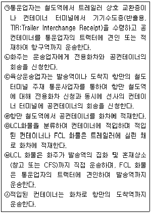
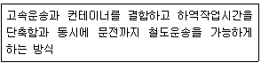

철도운송산업기사 (2008-05-11 기출문제)
1과목: 여객운송
1. 철도사업법에서 규정하고 있는 운수종사자가 아닌 것은?
- 이동 판매원
- 열차내 승무 직원
- 역무서비스 제공 직원
- 동력차 운전 직원
(정답률: 알수없음)

2. 열차고장, 파업 및 기타 노사분규 등으로 열차를 정상적으로 운행할 수 없는 경우에 제한 또는 조정할 수 있는 사항이 아닌 것은?
- 출발⋅도착역의 변경
- 운행시간 변경
- 승차인원의 제한
- 열차운행의 중지
(정답률: 알수없음)
3. 승차권 반환시 적용하는 수수료에 대한 설명으로 적합하지 않는 것은?
- 연계이용권 반환시 선행교통편 출발 2일전까지 최저수수료를 수수한다.
- 회원카드 포인트로 구입한 승차권을 반환하는 경우에는 수수료를 공제하고 포인트를 복구시켜 준다.
- 정기승차권 반환시 승차구간의 기준운임과 청구 당일까지의 사용횟수를 곱한 금액을 차감한 잔액을 반환한다.
- 자가발권승차권을 인터넷으로 반환시 출발 1일전부터 출발시각 1시간 이전까지 최저수수료를 수수한다.
(정답률: 알수없음)
4. 승차권을 분실하여 재발행 받을 수 있는 승차권으로 틀린 것은?
- 신용카드로 결제한 승차권
- 포인트로 결제한 승차권
- 현금영수증을 발행받은 승차권
- 할인증으로 구입한 승차권
(정답률: 알수없음)
5. 철도사업자가 운임⋅요금표를 관계 역, 영업소 등에 비치하지 않은 경우의 벌칙으로 맞는 것은?
- 1천만원 이하의 과태료에 처한다.
- 500만원 이하의 과태료에 처한다.
- 100만원 이하의 과태료에 처한다.
- 50만원 이하의 과태료에 처한다.
(정답률: 알수없음)
6. 열차운행 지연으로 인하여 보상을 청구하지 않을 것을 동의한 때에 승차권을 발매할 수 있는 경우가 아닌 것은?
- KTX 열차가 20분 지연된 경우
- 새마을호 열차가 40분 지연된 경우
- 무궁화호 열차가 50분 지연된 경우
- Korail Membership 회원이 발권한 경우
(정답률: 알수없음)
7. 운임⋅요금 결제에 관한 설명으로 맞는 것은?
- 100만원 이상의 수표는 수취를 거절할 수 있다.
- 철도공사는 신용, 포인트, 혼용결제 등을 제한할 수 있다.
- 혼용결제 승차권의 반환수수료는 후급, 신용, 포인트, 후급결제의 순서로 받는다.
- 포인트결제는 10000포인트 이상 적립된 경우에만 사용 가능하다.
(정답률: 알수없음)
8. A역에서 B역까지 KTX 특실로 어른 3명과 어린이 1명, 노인 1명이 함께 여행할 경우 수수할 금액은 얼마인가? (단, A~B역간 기준운임은 47,900원, 월요일인 경우)
- 237,200원
- 273,200원
- 297,200원
- 311,600원
(정답률: 알수없음)
9. 다음 중 철도사업약관신고(변경신고)시 철도사업약관에 기재되는 내용이 아닌 것은?
- 부가운임에 관한 사항
- 면책에 관한 사항
- 여객의 금지행위에 관한 사항
- 당해 철도사업을 위해 필요한 자금의 내역과 조달방법에 관한 사항
(정답률: 알수없음)
10. 철도보호 및 질서유지를 위하여 금지하는 행위가 아닌 것은?
- 역시설에서 노숙하는 행위
- 열차가 운행중 타고 내리는 행위
- 철도차량안에서 고성방가 등 소란을 피우는 행위
- 철도와 교차된 도로를 철도운영자의 승낙 없이 통행하는 행위
(정답률: 알수없음)
11. 철도여객운송약관에서 정의하는 용어의 설명으로 틀린 것은?
- “간이역”이라 함은 철도공사에서 승차권 발권서비스를 제공하지 않거나 열차 승무원이 승차권을 발권하는 역을 말한다.
- “발권”이라 함은 승차하고자 하는 열차의 운임⋅요금을 결제하고 승차권을 발행받는 것을 말한다.
- “환승승차권”이라 함은 연속되는 승차구간의 도중역에 도착한 시각의 10분내지 50분이내에 다른 열차로 갈아타는 사람에게 1매로 발권한 승차권을 말한다.
- “부가운임”이라 함은 철도산업발전기본법 제10조에 의하여 정당한 승차권을 소지하지 않고 승차한 사람 또는 유효하지 않은 승차권을 소지하고 승차한 사람 등에게 기준운임⋅요금 이외에 추가로 받는 금액을 말한다.
(정답률: 알수없음)
12. 도시철도를 건설 또는 운영하는 자에게 사업개선 명령을 할 수 있는 사항이 아닌 것은?
- 사업계획⋅운송약관의 변경
- 운임의 조정
- 고객서비스 개선사항
- 운행시간⋅운행회수 등 운행계획의 변경
(정답률: 알수없음)
13. 할인카드의 유효기간 연장에 관한 설명으로 틀린 것은?
- 유효기간을 연장하는 경우에는 최저수수료를 수수한다.
- 유효기간 종료일부터 1개월 이내에 연장을 청구할 수 있다.
- 6개월용은 3개월의 유효기간을 연장한다.
- 1년용은 6개월의 유효기간을 연장한다.
(정답률: 알수없음)
14. 할인카드에 대한 설명으로 옳은 것은?
- 기념카드는 기념 등 철도공사가 기획상품용으로 판매하는 카드로 25세 이상의 사람만이 사용할 수 있는 카드
- 비즈니스카드는 25세 이상의 사람만이 사용할 수 있는 카드
- 청소년카드는 만 13세 이상 만 25세 미만의 사람이 사용할 수 있는 카드
- 경로카드는 만 70세 이상의 사람만이 사용할 수 있는 카드
(정답률: 알수없음)
15. 다음 중 국토해양부장관에게 신고해야 하는 사항이 아닌 것은?
- 운임⋅요금 신고
- 철도운송서비스의 종류(여객운송, 화물운송) 변경
- 철도사업약관
- 전용철도 운영의 양도⋅양수
(정답률: 알수없음)
16. 다음 중 철도안전법에서 정하는 여객출입금지장소에 해당하는 곳은?
- 방송실
- 승무원휴게실
- 식당차
- 침대차
(정답률: 알수없음)
17. 철도운송을 거절하거나 다음 정차역에서 하차 시킬 수 있는 경우로 틀린 것은?
- 철도안전법에 정하고 있는 위해물품 및 위험물을 휴대한 경우
- 출발시각 10분 전까지 승차권을 구입하지 않았거나 발권하도록 되어 있는 예약한 승차권을 발권하지 않는 경우
- 철도안전법이 정하고 있는 여객열차 내에서의 금지행위, 철도보호 및 질서유지를 위한 금지행위를 한 경우
- 유아가 만 13세 이상의 보호자와 함께 여행하지 않는 경우
(정답률: 알수없음)
18. 다음 중 역 승강장(타는 곳)을 입장할 수 있는 입장권에 대한 설명으로 틀린 것은?
- 입장권을 소지한 사람은 차내에 출입할 수 없다.
- 사용하지 않은 입장권은 반환한다.
- 입장권에 표시된 지정열차에 1회에 한하여 사용할 수 있다.
- 입장권을 구입하지 않고 입장할 경우 부정승차를 적용한다.
(정답률: 알수없음)
19. 다음 중 철도공사에서 판매하는 ‘정기승차권’에 대한 설명으로 맞는 것은?
- 유효기간에 따라 15일용과 30일용이만이 있다.
- 간이역 및 승차권판매대리점에서는 판매할 수 없다.
- 이용 대상에 따라 학생용과 일반용이 있다.
- 정기승차권은 사용시작 7일전부터 역에서 판매한다.
(정답률: 알수없음)
20. KTX열차로 토요일 기준운임이 48,100원인 구간을 할인카드를 이용하여 승차권을 발권받아 열차출발 당일 열차 출발 전에 반환 청구시 반환 받을 금액은 얼마인가? (단, 할인카드 최대 할인좌석으로 배정한 좌석수량이 없는 경우)
- 30,300원
- 36,800원
- 40,000원
- 40,100원
(정답률: 알수없음)
2과목: 화물운송
21. 철도운송과 연안운송에 대한 설명으로 가장 적절한 것은?
- 연안운송은 대량화물의 장거리 운송시 저렴하고 크기나 중량에 거의 제한이 없다.
- 철도운송은 화물 수취에 부수적인 운송이 필요하므로 계획운송이 어렵고 화차 용적에 제한을 받는다.
- 철도운송은 중거리 운송일 때 적합하고 운임도 탄력적이다.
- 연안운송은 기후의 영향을 받지 않는다.
(정답률: 알수없음)
22. 다음 중 우리나라 주요 철도물류거점 수송 시설에 대한 연결이 적절하지 않는 것은?
- 지류센타 조성운영 : 수색역, 성북역
- 광석창고 : 동해역
- 물류기지내 CFS 운영 : 오봉역, 창원역, 부산진역
- 철강품 수송기지 : 의왕역, 오봉역
(정답률: 알수없음)
23. 의왕 ICD 조성현황에 대한 설명으로 적절하지 않는 것은?
- 수도권에 내륙컨테이너화물기지를 조성하여 화물유통구조 개선과 국가경쟁력 강화로 경제발전 도모를 목적으로 조성되었다.
- 운영법인은 KORAIL 로지스이며 공용CY 등 관리, 철도하역업무를 담당하고 있다.
- 수출입컨테이너 화물의 철도수송, 내륙통관, 내륙운송, 내륙항만기능(컨테이너 장치 및 보관, 컨테이너 작업장)을 수행하고 있다.
- 수출입화물 통관, 수입식품에 대한 안전도 및 위해성 검사 등을 위해 정부기관이 입주해 있다.
(정답률: 알수없음)
24. 다음 중 컨테이너의 철도운송순서의 일부를 나열한 것이다. 순서가 올바른 것은?

- ㉡-㉢-㉠-㉥-㉤-㉣-㉦
- ㉡-㉢-㉠-㉣-㉥-㉤-㉦
- ㉢-㉡-㉣-㉠-㉥-㉤-㉦
- ㉢-㉡-㉠-㉤-㉥-㉣-㉦
(정답률: 알수없음)
25. 컨테이너화물의 운송형태에 대한 설명으로 적절하지 않는 것은?
- CY/CY - 단일송화인/단일수화인 - DOOR TO DOOR
- CFS/CFS - 다수의 송화인/다수의 수화인 - Forwarder's Consolidation
- CFS/CY - 단일송화인/다수의 수화인 - Shipper's Consolidation
- CY/CFS - 다수의 송화인/단일수화인 - Seller's Consolidation
(정답률: 알수없음)
26. 다음 중 화물수송 관련 용어의 연결이 바르지 않는 것은?
- PECT(Pusan East Container Terminal) : (주)부산 컨테이너터미널
- CFS(Container Freight Station) : 소단위 컨테이너 화물집화소
- ODCY(Off Dock Container Yard) : 사설컨테이너장치장
- RORO(Roll-on Roll-off)선 : 화물을 운반구에 의해 수평 하역하는 방식의 배(바퀴를 이용한 적하방식)
(정답률: 알수없음)
27. 철도안전법에서 정하고 있는 위험물의 탁송 및 운송금지에 대한 내용으로 맞는 것은?
- 국토해양부령이 정하는 특정한 직무를 수행하기 위한 경우에도 위해물품을 휴대할 수 없다.
- 철도로 위험물을 탁송하는 자는 위험물의 안전한 운송을 위하여 국토해양부장관의 안전조치에 따라야 한다.
- 위해물품의 종류, 휴대 또는 적재허가를 받은 경우의 안전조치 등에 관하여 필요한 세부사항은 국토해양부령으로 정한다.
- 철도운영자의 특별승인이 있는 경우에는 점화, 점폭약류를 붙인 폭약, 니트로글리세린과 건조한 기폭약, 뇌홍질화연에 속하는 것 등 위험물을 탁송할 수 있다.
(정답률: 알수없음)
28. 다음에서 설명하고 있는 컨테이너 하역방식은 무엇인가?

- Freight Liner
- Flexi-Van
- Piggy Packer
- COFC 방식
(정답률: 알수없음)
29. 다음 중 철도사업법에서 규정하고 있는 철도시설이 아닌 것은?
- 철도차량에 부대되는 설비
- 역 편의시설 및 물류시설
- 차량유치시설
- 철도전문인력의 교육훈련을 위한 시설
(정답률: 알수없음)
30. 철도화물운송약관에서 정하고 있는 화물의 인도에 관한 내용으로 적절하지 않는 것은?
- 공사의 귀책사유로 연착되었을 때에는 지연일 수 만큼 인도기간은 연장된다.
- 화물의 인도시기는 공사에서 대리하화를 한 경우를 제외하고 고객이 하화를 완료한 때이다.
- 컨테이너화물의 인도시기는 하화 작업선에 차입을 완료하였을 때이다.
- 18시 이후에 하화가 완료된 화물을 제외하고 인도가 완료된 화물은 인도 당일 중에 역구내로부터 반출해야 한다.
(정답률: 알수없음)
31. 다음 중 철도수송에 대한 설명 중 적절하지 않는 것은?
- 운임전략의 선택폭 협소 및 물류인프라가 부족한 편이다.
- 철도운송시스템은 네트워크화되어 있는 철도역을 이용하기 때문에 문전수송이 가능하므로 분산화물 수송에 유리하다.
- 신규출하 화물에 대한 차량개발 등 능동적 대응이 어렵고, Container화 및 파렛트화 운송을 위한 철도물류 표준화가 미흡한 편이다.
- 의왕ICD는 수도권 컨테이너 내륙수송을 위한 철도수송 체제로 전환하려는 당초의 조성목적에 미흡한 수준으로 운영되고 있는 현실이다.
(정답률: 알수없음)
32. 다음 중 철도사업법에서 규정하고 있는 용어의 정의에 대하여 가장 바르게 설명한 것은?
- “철도사업자”라 함은 한국철도공사법에 의하여 설립된 한국철도공사 및 철도산업기본법에서 규정하고 있는 철도사업 면허를 받은 자를 말한다.
- “사업용철도”라 함은 철도사업을 목적으로 설치 또는 운영하는 철도를 말한다.
- “전용철도운영자”라 함은 철도안전법 제34조의 규정에 의하여 전용철도 등록을 한 자를 말한다.
- “철도차량”이라 함은 본선을 운행할 목적으로 제작된 동력차⋅객차⋅화차 및 특수차를 말한다.
(정답률: 알수없음)
33. 철도사업법에서 정하고 있는 “전용철도”에 대한 정의로 가장 적절한 것은?
- 자기의 수요에 따른 영업을 목적으로 하지 아니하고 타인의 수요에 따라 특수목적을 수행하기 위하여 설치 또는 운영하는 철도를 말한다.
- KORAIL의 수요에 따른 영업을 목적으로 하지 아니하고 자신의 수요에 따라 특수목적을 수행하기 위하여 설치 또는 운영하는 철도를 말한다.
- 다른 사람의 수요에 따른 영업을 목적으로 하지 아니하고 자신의 수요에 따라 특수목적을 수행하기 위하여 설치 또는 운영하는 철도를 말한다.
- KORAIL의 수요에 따른 영업을 목적으로 하여 KORAIL의 수요에 따라 특수목적을 수행하기 위하여 설치 또는 운영하는 철도를 말한다.
(정답률: 알수없음)
34. 철도물류 EDI 시스템에 대한 설명으로 적절하지 않는 것은?
- 철도화물 운송에서 발생되는 철도 소운송업체 및 화주간의 서류전달을 EDI 기술을 이용함으로써 문서를 전자화하고 화물소재지 파악, 도착정보 등을 화주 및 소운송업체에 제공하는 것이다.
- 철도의 대고객 서비스 향상과 기업의 물류비용 절감에 기여 하고자 하는 고객 및 사용자의 하드웨어이다.
- 현재 EDI 시스템은 철도 컨테이너 화물운송에 있어 제반여건이나 운영적인 측면에서 많은 효과는 있으나 활용도가 낮은 수준이다.
- EDI는 정형화되고 반복적인 문서를 기억장치에 저장하고 있다가 필요한 내용만 고친 후 통신망을 통해 상대의 컴퓨터에게 즉시 전송해주기 때문에 기업간의 거래절차를 대폭 간소화할 수 있다.
(정답률: 알수없음)
35. 철도 물류정보시스템은 6개의 서브시스템으로 구성되어 정보를 제공하고 있다. 이중 화물운송현황에서 제공되는 정보가 아닌 것은?
- 화물컨테이너 위치정보
- 화물운송장 및 신청현황 및 화차배정현황
- 화물운송통지서 현황
- 화차현황 및 선로현황
(정답률: 알수없음)
36. 표기하중 50톤, 용적 42m3, 적재함 길이 13m, 폭 2.7m, 비중 1.45일 경우 홉파차의 적재가능 중량 및 과적 중량은 얼마인가?
- 적재가능 중량 : 50.8톤, 과적중량 : 0.8톤
- 적재가능 중량 : 60.9톤, 과적중량 : 10.9톤
- 적재가능 중량 : 51톤, 과적중량 : 1톤
- 적재가능 중량 : 61톤, 과적중량 : 11톤
(정답률: 알수없음)
37. 복합운송에 대한 설명으로 올바르지 않은 것은?
- 복합운송의 궁극적 목적은 규격화 및 표준화된 컨테이너로 운송수단을 연계하여 일관된 운송을 통해 문전에서 문전으로 화물을 수송하는 것이다.
- 피기백 방식, 철도 - 해운(Train-Water)방식, 랜드브리지 방식은 대표적인 복합운송 방식이다.
- 복합운송인 중 계약운송인형은 자신이 운송수단을 보유하면서 복합운송인이 역할을 수행한다.
- 품목별 무차별 운임(FAK Rake)은 컨테이너 한 개당 또는 트레일러 및 화차 등의 개당 운임이 얼마라는 식으로 정해지는 운임이다.
(정답률: 알수없음)
38. 다음 중 철도화물운송약관에서 규정하고 있는 철도화물취급에 대한 설명으로 적절하지 않는 것은?
- 공사가 특히 필요하다고 인정할 경우에는 구두, 전화, EDI 등으로도 운송신청을 할 수 있다.
- 화물의 적하 등 철도수송에 직접 소요되지 않는 비용은 고객의 부담으로 한다.
- 화약류는 화차표기하중톤수의 100분의 80을 초과할 수 없다.
- 화물의 넓이, 길이 및 높이는 공사에서 승인한 때에는 공사에서 정한 차량한계와 건축한계를 초과할 수 있다.
(정답률: 알수없음)
39. A역에서 B역(369.3km)까지 40‘ 영컨테이너를 임률 741원, 사유화차할인율 10% 조건으로 수송할 경우 부가가치세를 제외하고 수수해야 하는 철도운임은?
- 243,100원
- 246,100원
- 243,600원
- 246,000원
(정답률: 알수없음)
40. 다음 중 연안해송에 대한 설명으로 적절하지 않는 것은?
- 육상운송에 비하여 속도는 느리지만 대량운송에 따른 경제성이 충분하여 유류⋅석탄⋅시멘트 등 벌크화물 운송에 많이 활용되고 있다.
- 연안해송의 문제점으로는 규모의 영세성⋅선박확보자금 지원 부족 등 원항경제성이 저하되는 경향이 있다.
- 국가안보와의 관계, 중요 원자재의 안정적 운송수단, 물류비 절감형 운송수단이라는 장점을 가지고 있다.
- 국내의 항구간을 운항하는 화물운송을 말하는 것으로 소형선박을 이용한 연안해송이 활발하게 이루어지고 있으며 재래선박과 낙후된 항만의 하역설비의 개선으로 인하여 효율적인 운영이 이루어지고 있다.
(정답률: 알수없음)
3과목: 열차운전
41. 철도차량운전규칙에 정한 입환전호방식의 종류로만 조합된 것은?
- 오너라전호, 가거라전호, 돌방하라전호
- 오너라전호, 가거라전호, 정지전호
- 오너라전호, 연결전호, 정지전호
- 오나라전호, 가거라전호, 출발하라전호
(정답률: 알수없음)
42. 돌방입환에 관한 설명으로 적절하지 않는 것은?
- 차량이 굴러갈 범위 내의 진로에 지장이 없는 것을 확인할 것
- 차량이 정차될 수 있도록 적의 제동조치 할 것
- 필요한 경우 차량제동에 경험 있는 직원을 승차시킬 것
- 차량을 기관차 뒤에 연결하였을 때는 돌방입환을 금지할 것
(정답률: 알수없음)
43. 상치신호기의 색등식 신호현시 방법 중 틀린 것은?
- 정지신호 - 적색등 1개
- 주의신호 - 등황색등 1개
- 경계신호 - 등황색등 1개와 적색등 1개
- 감속신호 - 등황색등 1개와 녹색등 1개
(정답률: 알수없음)
44. 도시철도운전규칙상 용어의 정의에서 “운전보안장치”에 해당 되지 않는 것은?
- 열차자동정지장치
- 열차자동제어장치
- 열차자동폐색장치
- 열차종합제어장치
(정답률: 알수없음)
45. 철도운영자 등은 철도안전법에 정한 철도사고 발생시 국토해양부장관에게 즉시 보고하여야 한다. 이 경우 보고사항과 거리가 먼 것은?
- 사고발생 일시 및 장소
- 사상자 등 피해사항
- 사고발생 원인 및 열차지연 상황
- 사고수습 및 복구계획
(정답률: 알수없음)
46. 장내신호기에 정지신호를 현시하였으나 짙은 안개 또는 눈보라 등 기후불량으로 200m의 거리에서 이를 확인하기 곤란할 때 역장의 조치로서 가장 옳은 것은?
- 인접역장에게 통보
- 유도신호 현시
- 불꽃신호관 설치
- 정지수신호 현시
(정답률: 알수없음)
47. 연동폐색식을 시행하는 폐색구간의 시작지점에 설치한 출발신호기의 구비조건 및 취급에 대한 설명으로 맞지 않는 것은?
- 폐색구간에 열차있을 때에는 정지신호를 현시할 것
- 장치에 고장이 났을 때는 정지신호를 현시할 것
- 단선운전을 하는 구간의 정거장에서 출발하려고 하는 열차에 대하여 진행신호를 현시하였을 경우에는 반대방향의 신호기는 정지신호를 현시할 것
- 열차를 폐색구간에 진입시키려 할 때 역장은 관제사에 보고후 차장(생략의 경우에는 기관사)과 협동하여 폐색 취급을 할 것
(정답률: 알수없음)
48. 자동폐색구간에서 도중 퀘도회로장애의 원인이 밝혀지지 않을 경우로서 그 궤도회로 구간을 최초로 운전하는 열차의 운전속도는 몇 km/h 이하인가?
- 15
- 25
- 45
- 55
(정답률: 알수없음)
49. 지도통신식과 자동폐색식을 범용하는 경우의 취급방법으로 가장 적절한 것은?
- 역장은 병용취급에 관한 사항에 대하여 관제사의 지시를 받은 후 차장 및 기관사에게 병용의 유무를 통고하여야 한다.
- 역장은 최초열차 운행시 폐색취급을 하고 상대 역장은 지도표 및 지도권 휴대열차 도착시 개통취급을 한 후 병용의 절차를 밟아야 한다.
- 출발신호기의 진행신호는 운전허가증 교부 후 현시하여야 한다.
- 지도통신식과 자동폐색식을 병용취급 할 때 운전허가증의 무휴대를 발견한 기관사는 운전속도를 45km/h 이하로 낮추고 관제사 또는 최근정거장이나 신호소 역장의 지시를 받아야 한다.
(정답률: 알수없음)
50. 수동장치신호기의 복위에 관한 설명으로 거리가 먼 것은?
- 차량이 신호기와 연동한 선로전환기에 도달하지 않고 정차하였을 때에는 신호기를 일단 정위로 할 것
- 연동장치를 한 것은 열차의 맨 뒤가 신호기와 연동한 선로전환기를 통과한 후 정위로 할 것
- 연동장치를 하지 않은 것은 열차의 맨 뒤가 신호기의 위치를 통과한 후 정위로 할 것
- 연동장치를 하지 않은 수동상치신호기는 차량의 맨 뒤가 선로전환기의 위치를 통과한 후 정위로 할 것
(정답률: 알수없음)
51. 열차의 퇴행운전 사유에 해당 되지 않은 것은?
- 선로 또는 열차에 고장이 있을 때
- 공사열차를 운전 할 때
- 구원열차를 운전 할 때
- 단행열차를 운전 할 때
(정답률: 알수없음)
52. 동력차의 앞 운전실 고장이 발생하였을 경우의 조치사항으로 적절하지 않는 것은?
- 45km/h 이하의 속도로 운전하여야 한다.
- 마지막 열차는 관제사가 지시하는 정거장까지 운전할 수 있다.
- 정거장에 진입할 때는 주의운전하여야 하며 속도는 15km/h를 초과할 수 없다.
- 뒤 운전실에서 조종하여 열차를 운전할 수 있다.
(정답률: 알수없음)
53. 다음 중 폐색방식에 대한 설명으로 적절하지 않는 것은?
- 단산자동폐색식 시행구간에서 출발신호가 고장일 경우는 지도통신식을 시행한다.
- 복선자동폐색식 구간에서 일시 단선운전시 자동폐색식에 의할 수 있는 방향의 열차는 지도통신식에 의해 운전한다.
- 통표폐색식을 시행하는 구간에서 통표를 분실했을 경우 지도통신식을 시행한다.
- 연동폐색식을 시행하는 구간에서 폐색장치 또는 출발신호기에 고장 있을 경우 지도통신식을 시행한다.
(정답률: 알수없음)
54. 철도차량의 길이가 21.5m 인 경우 차장률로 환산할 때 얼마인가?
- 1.45
- 1.4
- 1.54
- 1.5
(정답률: 알수없음)
55. 제동축 비율 60미만, 40이상으로 되었을 때 여객열차의 운전속도는 몇 km/h 이하인가?
- 80
- 70
- 50
- 40
(정답률: 알수없음)
56. 구원열차에 대한 정차열차의 방호방법에 관한 설명으로 적절하지 않는 것은?
- 정거장 외에서 열차가 사고⋅기타로서 정차한 경우 열차의 뒤쪽은 차장이 방호
- 정거장 외에서 열차가 사고⋅기타로서 정차한 경우 구원열차의 요구가 있었을 때에는 정지수신호를 방호
- 동력차에 승무원 1인만 승무하는 열차는 앞쪽에 대한 방호를 기관사가 무선방호
- 구원열차가 오지 않음이 확실한 방향에 대하여는 정지수신호에 의한 방호 생략가능
(정답률: 알수없음)
57. 철도차량운전규칙에 정한 용어의 정의에 대한 설명으로 틀린 것은?
- “차량”이라 함은 열차의 구성부분이 되는 1량의 철도차량을 말한다.
- “열차”라 함은 본선 및 측선을 운행할 목적으로 조성된 철도차량을 말한다.
- “측선”이라 함은 본선이 아닌 선로를 말한다.
- “완급차”라 함은 관통제동기용 제동통, 압력계, 차장변 및 수제동기를 장치한 차량으로서 열차승무원이 집무할 수 있는 차실이 설비된 객차 또는 화차를 말한다.
(정답률: 알수없음)
58. 철도차량운전규칙상 “정거장”에 해당되지 않는 것은?
- 여객의 승강(여객 이용시설 및 편의시설을 포함한다)을 목적으로 사용되는 장소를 말한다.
- 화물의 적하를 목적으로 사용되는 장소를 말한다.
- 열차의 조성, 열차의 교행 또는 대피를 목적으로 사용되는 장소를 말한다.
- 상치신호기 등 열차제어시스템을 조작⋅취급하기 위하여 설치한 장소를 말한다.
(정답률: 알수없음)
59. 폐색구간을 분할하여 간이역을 폐색구간의 한끝으로 할 경우 간이역에서의 취급으로 맞지 않는 것은?
- 열차를 통과시킬 때는 적당한 위치에서 수신호를 현시 할 것
- 열차가 다음 폐색구간에 진입한 후가 아니면 후속열차에 대한 폐색요구에 응하지 말 것
- 통과열차의 기관사는 통과할 것을 예측하고 주의운전 할 것
- 열차를 정지시킬 때는 적당한 위치에서 수신호를 현시 할 것
(정답률: 알수없음)
60. 객차 5량으로 조성된 여객열차에 연결할 수 있는 차량으로 가장 적절한 것은?
- 제동관 통기 불능한 회송객차
- 연결기 파손의 회송 동차
- 강도 부족한 회송 부수차
- 공기제동기 사용불능의 회송 객차
(정답률: 알수없음)